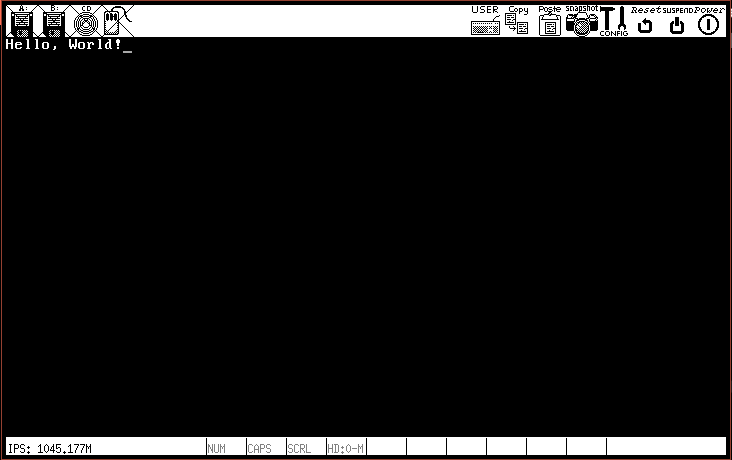

- categories
- >
- OS
写在前面
开发平台：Gentoo（或其他Linux发行版，个人推荐Ubuntu）
实现功能：屏幕输出Hello, World!
参考：《一个64位操作系统的设计与实现》
需要的工具
- 汇编语言使用的nasm编译器。
- 调试工具使用的Bochs，如果对自己技术有信心，只想直接运行程序，推荐使用qemu，有的时候只要简单查看效果，使用qemu相对也更方便。
- 顺手的编辑器，看个人喜好。
安装：
Gentoo:
需要自己配置一下USE标志，bochs需要X, debugger，nasm无特殊要求。
sudo emerge -av bochs nasmUbuntu:
sudo apt install -y nasm bochs bochs-x可选，安装qemu：
Gentoo:
sudo emerge -av qemuUbuntu:
sudo apt install qemu-system-x86BIOS可以引导的程序
如果使用VIM编辑器，在编写nasm汇编代码时使用set ft=nasm可启用nasm高亮。
boot.asm程序：
org 0x7c00
; clear screen
mov ax, 0x0600
mov bx, 0x0700
mov cx, 0
mov dx, 0x184f
int 0x10
; set focus
mov ax, 0x0200
mov bx, 0x0000
mov cx, 0x0000
int 0x10
; display msg
mov ax, 0x1301
mov bx, 0x000f
mov cx, MSG_LEN
push ax
mov ax, ds
mov es, ax
pop ax
mov bp, MSG
int 0x10
fun:
hlt
jmp $
MSG: db "Hello, World!"
MSG_LEN equ $ - MSG
times 510 - ($ - $$) db 0
db 0x55, 0xaa编译
nasm boot.asm默认生成bin格式的无后缀boot文件
有两种方法查看写的程序，两种可以相互补充。主要看个人喜好。
使用Bochs
使用bochs提供的工具bximage创建os.img
bximage -mode=create -hd=10 -imgmode=flat -sectsize=512 os.img -q提示将ata0-master: type=disk, path="os.img", mode=flat写入bochsrc文件。bochsrc文件是bochs执行需要的配置文件。默认查找顺序是.bochsrc，bochsrc
bochsrc文件:
ata0-master: type=disk, path="os.img", mode=flat写入os.img
dd if=boot of=os.img bs=512 count=1 conv=notrunc执行验证
bochs
使用qemu
cat boot.asm > hello.img
qemu-system-x86_64 hello.img运行结果

更方便的用法
主要是优化了输出语句
新的boot.asm程序：
org 0x7c00
; clear screen
mov ax, 0x0600
mov bx, 0x0700
mov cx, 0
mov dx, 0x184f
int 0x10
; set focus
mov ax, 0x0200
mov bx, 0x0000
mov cx, 0x0000
int 0x10
; print function
print:
push ax
push bx
mov ah, 0x0e
.Loop:
cmp [bx], byte 0
je .Exit
mov al, [bx]
int 0x10
inc bx
jmp .Loop
.Exit:
pop bx
pop ax
ret
; display msg
mov bx, MSG
call print
mov bx, NICE
call print
fun:
hlt
jmp $
MSG: db "Hello, World!", 0x0d, 0x0a, 0
NICE: db "Love and Peace!", 0x0a, 0x0d, 0
times 510 - ($ - $$) db 0
db 0x55, 0xaa
Return = CR = 13 = 0x0d = \r
NewLine = LF = 10 = 0x0a = \n
一些解释
clear screen
BIOS中断服务程序INT 0x10主功能号AH=0x06。
作用：指定范围滚动窗口的功能，具备清屏功能
AL=滚动的列数，0实现清空屏幕功能，此时其他Bx, CX, DX寄存器参数不起作用。
BH=滚动后空出的位置放入的属性
CH=滚动范围的左上角坐标列号
CL=滚动范围的左上角坐标行号
DH=滚动范围的右下角坐标列号
DL=滚动范围的右下角坐标行号
BH颜色属性
- bit 0~2：字体颜色（0-黑, 1-蓝, 2-绿, 3-青, 4-红, 5-紫, 6-棕, 7-白）
- bit 3：字体亮度，0-字体正常，1-字体高亮度
- bit 4~6：背景颜色（0-黑, 1-蓝, 2-绿, 3-青, 4-红, 5-紫, 6-棕, 7-白）
- bit 7：字体闪烁，0-不闪烁，1-闪烁
set focus
BIOS中断服务程序INT 0x10主功能号Ah=0x02
作用：屏幕光标位置的设置功能
DH=游标的列数
DL=游标的行数
BH=页码
display
BIOS中断服务程序INT 0x10主功能号AH=0x13。
作用：字符串显示
AL=写入模式
- AL=0x00：字符串的属性由BL寄存器提供，字符串长度由CX寄存器提供（B为单位），显示后光标位置不变。
- AL=0x01：同AL=0x00，但光标会移动至字符串尾端位置。
- AL=0x02：字符串属性由每个字符后面紧跟的字节提供，CX寄存器提供的字符串长度改成Word为单位，显示后光标位置不变。
- AL=0x03：同AL=0x02，但光标会移动至字符串尾端位置。
CX=字符串的长度
DH=游标的坐标行号
DL=游标的坐标列号
ES:BP=要显示字符串的内存地址
BH=页码
BL=字符属性/颜色属性。
- bit 0~2：字体颜色（0-黑, 1-蓝, 2-绿, 3-青, 4-红, 5-紫, 6-棕, 7-白）
- bit 3：字体亮度，0-字体正常，1-字体高亮度
- bit 4~6：背景颜色（0-黑, 1-蓝, 2-绿, 3-青, 4-红, 5-紫, 6-棕, 7-白）
- bit 7：字体闪烁，0-不闪烁，1-闪烁
- Valine
- LiveRe
- ChangYan